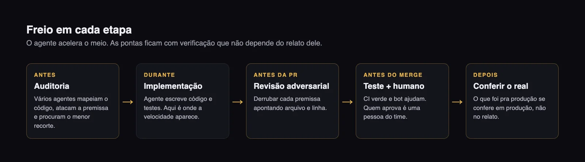
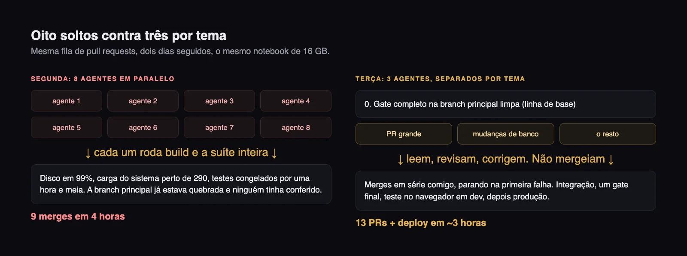

Neste artigo
Hoje eu toco produto em três frentes ao mesmo tempo: sou CTO do Leap Notes, tech lead do Portal da História do Ceará e engenheiro no Woolly, sempre com time enxuto. Essa conta só fecha porque a distância entre "tive uma ideia" e "tá no ar" encolheu muito, e porque eu trato agente de código como parte do time: com papel definido, com revisão e com freio.
Tenho uma opinião forte sobre velocidade, e ela vem acompanhada de método.
Não tem mais desculpa pra tanta demora
Aprendi a programar sem IA, na base da documentação e de errar muito. Sei quanto custava cada passo, e é por isso que dou valor ao que mudou.
Eu uso o Claude Code praticamente o dia inteiro, e pedir função pronta é o de menos. O uso principal é orquestrar: um agente levanta o código envolvido, outro critica o plano, outro implementa, outro testa no navegador. O que antes era uma semana de vai e volta vira uma tarde. Por isso acho que hoje não tem motivo pra um produto demorar meses entre a concepção e a entrega, e quem decide que "isso é modinha" para de acompanhar justamente quando a coisa fica boa.
Fora da bolha, quase ninguém imagina o que dá pra fazer com isso dentro de uma empresa. Pra maioria, IA é o resumo que aparece no topo da busca do Google. Eu penso em processo interno: a planilha atualizada na mão toda sexta, o relatório que ninguém tem tempo de montar, a pergunta de negócio sem resposta porque o dado tá em três lugares. No Portal da História do Ceará, montei uma IA que consulta o banco do acervo e cita a fonte, rodando num modelo barato. Foi nesse tipo de coisa que a velocidade fez mais diferença pra mim.
Rápido não é sem freio
Agente de código erra com a mesma confiança com que acerta. Já vi agente relatar que uma mudança não tinha chegado em produção quando tinha. Já vi auditoria contar quase nenhum teste num repositório que tinha milhares, porque olhou a branch errada. Se você só aperta o acelerador, entrega o bug rápido também.
Então meu fluxo tem freio nas pontas. Antes de implementar, vários agentes auditam: um mapeia o código, outro procura onde a premissa pode estar errada, outro pergunta se aquele é o menor recorte que entrega valor. Antes da PR, uma revisão adversarial que tenta derrubar cada premissa apontando arquivo e linha; se o agente diz "isso já é tratado em outro lugar", ele tem que mostrar onde. Antes do merge, CI verde, bot e auditoria minha são necessários, mas quem aprova é uma pessoa do time. Depois do merge, o que foi pra produção se confere em produção, não no relato do agente.

Parece burocracia, mas quase sempre sai mais rápido. Uma PR que volta do review porque a premissa nunca foi conferida custa mais do que a auditoria que teria pego o problema antes.
Paralelizar com critério
Paralelismo não é de graça. Raciocínio paraleliza bem: vários agentes lendo, auditando e criticando ao mesmo tempo rendem muito. Build e suíte de testes não: oito processos pesados disputando a mesma máquina rodam mais devagar que três em fila, e uma PR quebrada contamina o resultado de todas as outras. Testei os dois jeitos com a mesma fila de trabalho, e a receita que ficou fecha mais de dez PRs com deploy numa tarde, usando só três agentes:
- Linha de base primeiro. Rodar o gate completo na branch principal limpa antes de despachar qualquer agente. Se ela já tá quebrada, ninguém vai ficar verde.
- No máximo três agentes pesados, separados por tema. A PR grande sozinha num agente, as mudanças de banco em outro, o resto num terceiro.
- Agente não mergeia. Eles leem, revisam e corrigem. Os merges ficam comigo, em série, com um script que para na primeira falha.
- PRs relacionadas numa branch de integração. Resolve conflito uma vez, roda o gate uma vez no estado final.
- Navegador antes de produção. Deploy no ambiente de dev e um agente usando o app de verdade com conta de teste, que me entrega um laudo.

Velocidade não é quantidade de coisa rodando ao mesmo tempo. É quanto trabalho chega em produção sem voltar.
A regra também vale no sentido contrário. Num reteste de uma feature colaborativa, deixei tudo em série num agente só, e cada rodada que achava defeito custava uns 20 minutos até a próxima. Teste em navegador headless pesa pouco, então dava pra dividir por frente independente (perda de texto, reconexão de rede, quem enxerga o quê), cada uma com as próprias contas descartáveis. O freio vai no que é pesado e arriscado. O resto pode correr em paralelo.
Por que eu continuo acelerando
Tem gente que vê agente de código errando e conclui que ele não presta. Eu concluo o contrário: a ferramenta é boa o bastante pra saturar uma máquina inteira de trabalho útil, e o que separa entrega de bagunça é método. Toda vez que o fluxo falha em algum ponto, a regra nova entra nele pra não repetir. É isso que deixa um time pequeno entregar como time grande.

Full stack de Fortaleza. Ciência da Computação na UECE, cofundador e CTO do Leap Notes, tech lead do Portal da História do Ceará.